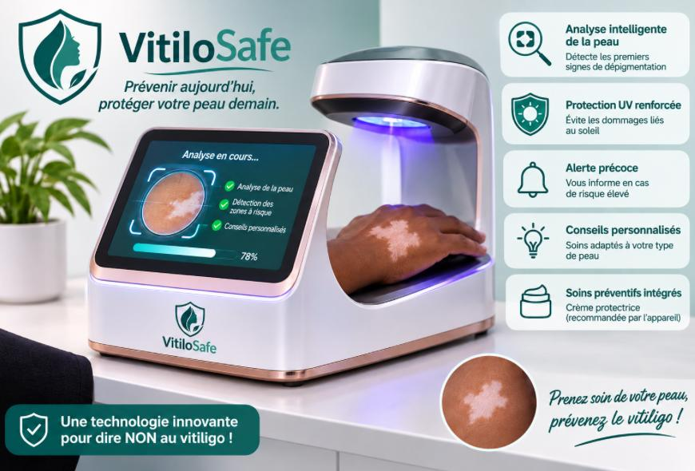

À VOS CÔTÉS
Des solutions pour informer, prévenir et accompagner les personnes concernées par le vitiligo.
Retrouvez des informations pour vous orienter vers des dermatologues et des structures médicales.
Découvrez des conseils et des informations pour mieux comprendre le vitiligo.
Découvrez notre projet de produits locaux adaptés aux besoins des personnes concernées.
Un espace d'écoute et d'accompagnement pour favoriser le bien-être psychologique.

VitiloSafe est notre concept de machine innovante destiné à contribuer à la prévention et à la surveillance de la santé de la peau.
VitiCare est à vos côtés pour vous informer et vous orienter.
Nous contacter